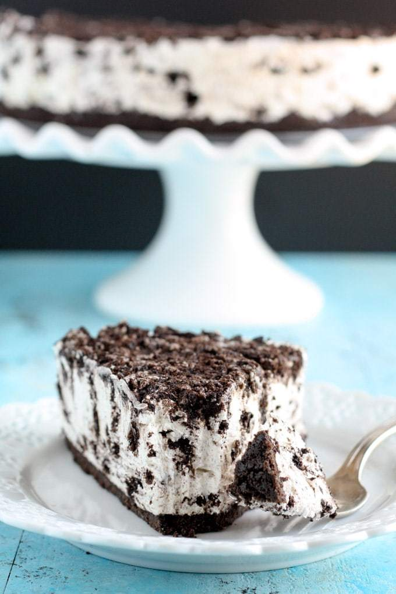

Oreo Cheesecake Recipe

Above shows picture of oreo cheesecake.
Below are the ingredients you will need to use:
- 2 Packs of Oreos
- Butter
- Creamcheese
- Powdered Sugar
- Whipping Cream
- Vanilla Extract
Instructions to make the Oreo CheeseCake! As per below:
To make the crust of the cake
- Step 1: Add the Oreos to a food processor and process until you have fine crumbs.
Scoop the crumbs into a mixing bowl, and the melted butter, and mix until are of the crumbs are moistened.
- Step 2: Line the bottom of a 9-inch springform pan with parchment paper, scoop the mixture into the pan, and firmly press
it down into one even layer. Transfer to the refrigerator to chill while you make the cheesecake filling.
To make the oreo cheesecake itself
- Step 1: Using a stand mixer fitted with the whisk attachment, or in a large mixing bowl using a hand-held mixer, beat the cream cheese until smooth.
Add in the powdered sugar and vanilla extract and mix until well combined.
- Step 2: Pour the heavy whipping cream in a separate bowl. Start mixing on low speed, then increase the speed to medium-high until the mixture
thickens and stiff peaks form. Add the whipped cream to the cream cheese mixture and gently fold it in or mix it in on low speed with your mixer until just combined.
Then, fold in the chopped Oreos,
- Step 3: Remove the springform pan from the refrigerator, scoop the cheesecake filling onto the crust, and carefully spread it
around into one even layer.
- Step 4: If using the topping, add the extra chopped Oreos on top and gently press them down a little.
- Step 5: Cover tightly and transfer back to the refrigerator to chill for at least 4-5 hours or overnight. Remove the no-bake cheesecake from
the pan, slice and enjoy!
Original Source of the Oreo Recipe